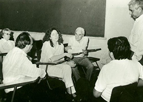
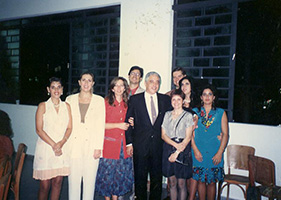
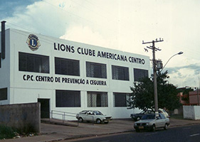
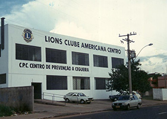

Sobre o CPC:
Quem Somos:
Somos uma instituição especializada em habilitação e reabilitação de pessoas com Deficiência Visual de todas as faixas etárias e seus familiares/cuidadores.
Fundados pelo Lions Clube Americana Centro, contamos com uma equipe de profissionais das áreas de Assistência Social, Educação e Saúde, além de uma equipe de voluntários que atua na captação de recursos e em atividades ligadas ao esporte, lazer, desenvolvimento físico e social.
Nossa História
O CPC nasceu de um gesto de amor, solidariedade e otimismo de Deise A. Fernandes, que junto ao Lions Clube Americana Centro mostrou a necessidade da criação e implantação de uma instituição de atendimento a pessoas com Deficiência Visual, que aconteceu em 01 de agosto de 1990.
A então diretoria do Lions atendeu prontamente à solicitação e com a ajuda do Colégio D. Pedro II,que cedeu salas para o início do trabalho, da Prefeitura Municipal de Americana, que cedeu professoras e das Domadoras do Lions como voluntárias, foi iniciado o trabalho do CPC.
A sede própria foi inaugurada dois anos depois, construída inteiramente com doações da comunidade, de empresas e, principalmente com o empenho dos Leões do Lions.
O CPC profissionalizou-se através do trabalho realizado por equipe multidisciplinar, construindo um novo olhar para a Deficiência Visual, incentivando e promovendo o exercício da cidadania de forma a contribuir para uma sociedade mais igualitária e verdadeiramente inclusiva.
Atendemos os municípios de Americana, Santa Bárbara D’Oeste, Nova Odessa e Sumaré.
Nossa Galeria:
QUANDO TUDO COMEÇOU:

FUNDADORES:

O CPC:

{kind=link}
{kind=link}
O CPC: 
{kind=link}
Nossa Missão:
Oferecer atendimento multidisciplinar especializado à pessoa com Deficiência Visual (Cega e com Baixa Visão) buscando o desenvolvimento de sua autonomia, inclusão e qualidade de vida, através de estrutura física adequada e Tecnologia Assistiva inovadora.
Nossa Visão:
Ser um centro de referência no atendimento e inclusão de pessoas com Deficiência Visual.